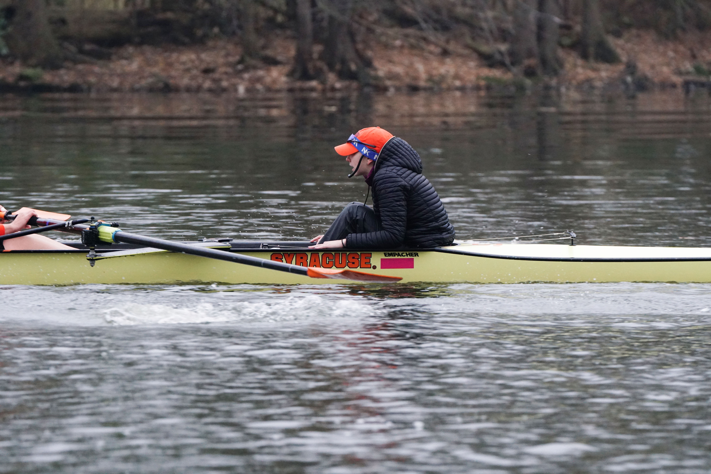

“Information is the best motivation a coxswain can give to their rowers” “The most powerful tool a coxswain can have is knowing the rowers that are in their hull” “Coxswains are the eyes, the ears, and the mouth or the boat.”

Welcome to the Coxnnection! My name is Caileigh, a current coxswain at Syracuse University on the Division-1 women's rowing team and a former coxswain from Merion Mercy Academy’s women's rowing team in Philadelphia. The title of the page is a play on words of “Coxswain” and “Connection.” Why? Coxswains are the crucial connection between not only the coaches, and the rowers but from winning and losing a race. Not only is the word connection applied to the rowing stroke itself but more importantly the connection between coxswain and rower, whose strength fosters a winning boat.
When I was a young coxswain back in 2017, I went to my first crew practice and was put in the coxswain seat. The only thing I was told before going out was, “Don't steer them into the dam (on the Schuylkill River), you'll kill everyone and lose a $40,000 boat.” I wasn't scared at all!! I was lucky to have a great mentor on my team at the time, an older coxswain that continued later to attend the University of Washington, (shoutout Cece!) She was my go-to for all things-coxswain. However, I started to fall in love with rowing and coxing and noticed a lack of resources online to gain knowledge and grow. I also experienced limited coxswain-specific coaching at the time as the rowers were trying to learn how to row. That was my coaching as well, which is most important as a beginner – just to understand the basic foundations of rowing. As you learn that, then you start to develop your own mojo where learning some strategies, new words, and some tricks is your key. Establishing yourself as a COXSWAIN!
I created this website as a place where coxswains or rowers, specifically beginner coxswains looking to learn, can come and explore the various resources and things I used to gain knowledge and get better.


Crew is now on dock (bow always pointed in the direction you will be going)*remember which direction you came out (bow or stern first) because that is a coxswains responsibility to put it back on the rack correctly*

Distance refers to the meters (m) The rowers do not know how far they have gone or how far they need to go. This is how you tell them. Distance (meters) are important in how the race, pieces, steady is split up so don't be shy on giving the rowers this information
Location refers to where your boat is compared to the competition and to landmarks. Landmarks typically are only used when the rowers are familiar with the course they are racing on or practicing on. It gives them an indication on where they are which can be motivational.
These calls come with time because the boat feel comes with time! When you understand the rowing stroke, you can make the best technical calls Technical calls tend to be reminders or corrections to find boat speed.
he key to technical calls is listening to what the coach is saying Don't be ashamed in repeating what the coach is saying to your rowers/athletes This will only be effective if you understand it yourself so you can use the best words Ask coaches questions…ask them what they mean…ask them to demonstrate
Be demanding
Be informational
Be communicative
Be yourself.


If you are coxing an American boat (vespoli, pocock, resolute) then you need 7/16 spare parts. If you are coxing in an international boat (empacher) then you need 10m spare parts.
Know which parts are used in the boat you are using. Carry around spare parts. It is not uncommon for parts to come loose or fall off while on the water.
Be prepared and predictable.
Recordings are a great resource to see other coxswains in action and learn. It's a good opportunity to expand your vocabulary and understand what is happening in a race setting. Don't copy off of other coxswains calls without knowing the reason, you must understand so that you too can make calls specific to your own crew. Use recordings as inspiration.

Watching races is important for understanding what goes on in a race and being able to see what is happening WHILE it is happening. This is a skill that a good coxswain can do. Sit down with a pen and paper and write down what you see happening in the race.
